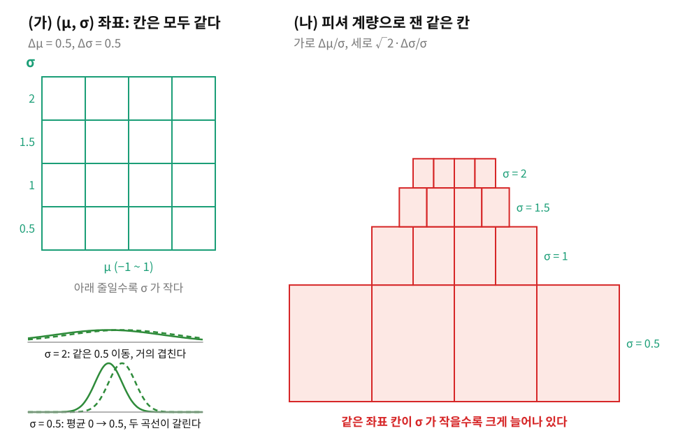
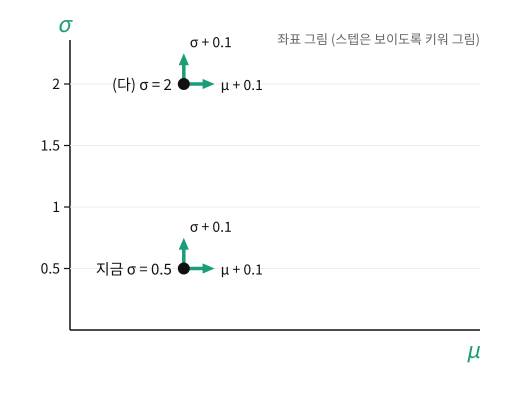

지구본에서는 바깥의 3차원 공간이 계량을 정해 주어서, 경도 한 칸의 실제 길이 sinθ를 구면을 3차원에 놓고 재서 얻었다. 그런데 ML이 움직이는 공간 가운데는 바깥이 없는 것이 많다. 평균 μ와 표준편차 σ로 정해지는 정규분포 N(μ,σ2)들을 모으면 점 하나가 분포 하나인 2차원 공간이 생기는데, 이 공간은 어떤 3차원 공간 안에도 곡면으로 놓여 있지 않다. 이 공간에서 평균을 0.1 옮기는 일은 어디서나 같은 크기의 변화일까? 같은 크기가 아니라면, 이 공간의 계량은 무엇이 정할까?
평균을 똑같이 옮겨도
숫자로 보자. 평균을 0에서 0.5로 옮긴다. σ=0.5인 좁은 분포라면 옮기기 전과 뒤의 두 곡선이 한눈에 갈리지만, σ=2인 넓은 분포라면 두 곡선이 거의 겹친다. 두 곡선 아래에서 겹치는 넓이를 재면 앞은 0.62, 뒤는 0.90이다. 좌표로는 똑같이 0.5를 걸었는데 분포로는 크기가 다른 변화다. 분포 공간의 계량은 「좌표가 얼마나 움직였나」가 아니라 「분포가 얼마나 바뀌었나」를 재야 한다.
분포가 얼마나 바뀌었는지는 관측 하나가 그 변화에 얼마나 크게 반응하는지로 잰다. 분포에서 관측 x를 하나 뽑고, 평균을 조금 옮겼을 때 그 관측의 로그확률 logp(x)가 얼마나 변하는지 본다. 정규분포에서 평균 쪽 변화율은 (x−μ)/σ2이다. 평균에서 표준편차 하나만큼 떨어진 관측 x=μ+σ를 넣으면 평균 쪽 변화율이 1/σ이라, σ=0.5에서는 2, σ=2에서는 0.5다. 좁은 분포에서는 같은 자리의 관측이 평균의 움직임에 네 배 크게 반응한다. 관측마다 반응이 다르므로 반응의 제곱을 분포 전체에서 평균 내면 1/σ2이 되고, 이 평균을 평균 방향 한 칸의 길이 제곱으로 삼는다. 표준편차 쪽도 같은 방법으로 재면 2/σ2이고, 두 방향의 반응을 곱해 평균 낸 비대각 성분은 0이다.
피셔 계량 (분포 공간의 자 / Fisher Metric, gij): 점 하나가 확률분포 하나인 공간에 까는 리만 계량. 좌표를 조금 움직일 때 관측의 로그확률이 얼마나 반응하는지를 두 방향끼리 곱해 분포 전체에서 평균 낸 것으로, 좌표가 아니라 분포가 얼마나 바뀌었는지를 잰다. 같은 행렬을 피셔 정보행렬이라고도 부른다.
같은 장의 계량 텐서 절에서 고무판을 잡아늘이자 같은 좌표 한 칸이 자리마다 다른 길이가 되었다. 피셔 계량, 곧 분포 공간의 고무판은 σ가 작은 쪽이 크게 늘어나 있다. 같은 좌표 칸(Δμ=0.5, Δσ=0.5)을 피셔 계량으로 재면 가로 길이가 σ=0.5인 줄에서는 1.0, σ=2인 줄에서는 0.25다.

피셔 계량, 곧 분포 공간의 고무판. (가) 정규분포들의 (μ, σ) 좌표에서는 칸(Δμ = 0.5, Δσ = 0.5)이 모두 같다. 왼쪽 아래 두 판은 평균을 0에서 0.5로 옮긴 두 정규분포로, σ = 0.5에서는 갈리고 σ = 2에서는 거의 겹친다. (나) 같은 칸을 그 칸 가운데의 피셔 계량으로 재어 가로 Δμ/σ, 세로 √2·Δσ/σ로 그렸다. σ가 작은 줄일수록 크게 늘어나 있다. 칸을 이어 붙인 모양은 그림을 위한 것이다. 그림: sources/ch03/anchor_figs.py
ML에서: 같은 학습률, 다른 크기의 변화
평균과 표준편차를 함께 내놓아 예측의 불확실성까지 알려 주는 회귀 모델을 경사하강으로 학습한다고 하자. 옵티마이저는 두 파라미터에 같은 학습률을 주고 숫자를 움직이지만, 피셔 계량으로 재면 같은 dμ=0.1이 σ=1에서는 길이 0.1, σ=0.1에서는 길이 1이다. 모델이 자신 있게 좁은 분포를 낼수록 같은 크기의 스텝이 분포를 크게 흔든다. 스텝의 크기를 이 계량으로 재서 걷는 방법이 자연 그래디언트이고, 분포 사이의 거리를 이 계량으로 재자는 생각은 라오(C. R. Rao)의 1945년 논문으로 거슬러 올라간다. 여기서 움직이는 것은 모델 분포의 파라미터 (μ,σ)이고, 계량은 분포가 실제로 얼마나 달라졌는지를 잰다.
개념 다지기: 분포를 움직이는 곳마다 왜 피셔 계량이 따라오나
선생님
신경망을 학습할 때 스텝 하나가 큰 변화였는지 작은 변화였는지는 무엇을 보고 알아요?
김민준
파라미터가 얼마나 움직였는지요. 업데이트 크기의 노름을 로그로 찍어 보잖아요.
선생님
같은 모델을 표준편차 대신 로그 표준편차로 적어 학습했다면, 그 노름은 같게 나올까요?
김민준
아… 같은 분포로 옮겨 가도 숫자가 다르니까 노름도 달라지겠네요. 좌표를 바꿔도 남는 것이 아니었어요.
이서연
그러면 모델이 내놓는 분포가 얼마나 바뀌었는지를 재야겠네요. 음, 그런데 분포가 얼마나 바뀌었는지를 숫자 하나로 재려면 결국 관측을 넣어 봐야 하잖아요. 관측의 로그확률이 얼마나 출렁이는지로요.
선생님
그게 피셔 계량이에요. 관측이 반응하는 정도는 분포가 정하지 좌표의 이름이 정하지 않으니까, 로그를 씌워 적든 그대로 적든 같은 변화에는 같은 길이를 줘요. 그럼 이 자가 필요한 곳을 떠올려 볼까요?
김민준
강화학습에서 정책을 한 번에 너무 많이 바꾸지 못하게 막는 거요. 파라미터가 아니라 행동 확률이 얼마나 바뀌었는지로 막잖아요.
이서연
두 모델이 얼마나 다른지 잴 때도요. 그리고 처음 보는 분포 공간이 휘었는지 물을 때도 바깥이 없으니까 피셔 계량으로 재야 해요.
선생님
그래요. 스텝의 크기를 정할 때, 두 분포의 떨어짐을 잴 때, 분포 공간의 모양을 물을 때마다 피셔 계량이 따라와요. 뒤에서 두 분포가 얼마나 다른지 한 방향으로 재는 양을 만나면, 아주 가까운 두 분포에서는 한 방향으로 잰 그 떨어짐이 피셔 계량으로 돌아온다는 것도 보게 돼요.
이서연
그러니까 바깥이 없는 공간에서는 관측이 계량을 정하는 거네요. 관측으로 잘 구별되는 두 분포일수록 멀어요.
문제 6: 저울 두 대로 0.1 kg 알아채기
확인 같은 물건을 잴 때마다 읽은 값이 조금씩 달라지는 저울 두 대가 있다. 읽은 값의 오차는 표준편차가 A는 0.05 kg, B는 1 kg이다(설명을 위한 값). 물건의 무게가 0.1 kg 늘어난 것을 알아채려고 여러 번 재어 평균을 낸다. 평균의 표준편차가 늘어난 무게의 절반인 0.05 kg 이하가 되려면 각 저울로 몇 번 재야 하는가?
그럼 1/n≤0.05에서 n≥20, 곧 n≥400번이야. A는 0.05/1=0.05라 한 번이면 되고.
선생님
두 저울의 횟수 비 400은 어디서 왔죠?
이서연
음, 표준편차 비 20의 제곱이요. 한 번 잴 때 얻는 것이 1/σ2에 비례하네요. A는 한 번에 400, B는 1이에요. 피셔 계량의 평균 쪽 성분 1/σ2이 바로 이 「한 번 잴 때 얻는 정보의 양」이었어요.
선생님
그래서 0.1 kg 늘어난 변화를 피셔 계량으로 재면 A에서는 0.1/0.05=2, B에서는 0.1/1=0.1이에요. 같은 0.1 kg이 저울에 따라 크기가 다른 변화예요.
김민준
싸구려 체온계로 미열인지 확인하려면 여러 번 재 봐야 하는 이유네요.
문제 7: 평균 쪽 0.1과 표준편차 쪽 0.1
계산 평균 μ와 표준편차 σ를 함께 내놓는 회귀 모델이 지금 σ=0.5를 내고 있다. (가) μ만 0.1 옮기는 스텝과 σ만 0.1 키우는 스텝을 피셔 계량으로 재면 각각 얼마인가? (나) 두 스텝이 분포를 같은 만큼 바꾸게 하려면 σ 쪽 스텝을 μ 쪽 스텝의 몇 배로 잡아야 하는가? (다) σ=2일 때는 (가)와 (나)의 답이 어떻게 되는가?

문제 7의 두 스텝을 (μ,σ) 좌표 그림에 그린 것. σ=0.5와 σ=2인 자리에서 μ만 0.1, σ만 0.1 옮기는 화살표(보이도록 키워 그렸다)
같이 풀기 세션 7
김민준
둘 다 0.1만큼 움직였으니까 같은 크기의 스텝이죠. 옵티마이저도 두 파라미터에 같은 학습률을 주잖아요.
선생님
파라미터 공간의 한 칸이 어느 방향으로나 같은 길이라는 건 어디서 나온 생각이에요? 계량 행렬을 다시 보세요.
김민준
diag(1/σ2,2/σ2)… 방향마다 칸의 길이가 달라요. μ 쪽은 1/0.25×0.1=0.2, σ 쪽은 2/0.25×0.1≈0.28이에요. σ를 키운 스텝이 분포를 더 많이 바꿨네요.
이서연
그럼 (나)는 σ 쪽 한 칸이 μ 쪽 한 칸보다 2배 기니까, σ 쪽 스텝을 1/2≈0.71배로 줄이면 돼.
선생님
(다)에서 σ=2가 되면 그 0.71배도 바뀔까요?
이서연
계량 행렬에 σ2이 두 칸에 똑같이 들어 있으니까… 두 스텝이 0.05와 약 0.071로 둘 다 네 배 짧아져요. 그런데 두 칸의 비는 여전히 2라서 0.71배는 변하지 않아요.
선생님
그래요. 분포가 넓으면 같은 크기의 스텝도 분포를 덜 바꾸고, 방향 사이의 비는 σ가 바뀌어도 변하지 않아요.
김민준
문제 4의 등산로랑 같네요. 파라미터 지도에서도 한 칸의 실제 길이가 자리마다, 방향마다 달라요. 학습률을 똑같이 줬다고 분포가 똑같이 움직인 게 아니었어요.